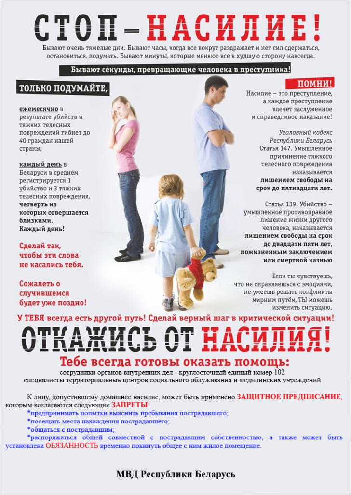

Профилактика домашнего насилия
ПЛАН ОБЕСПЕЧЕНИЯ БЕЗОПАСНОСТИ 1
Если Вы живете вместе с человеком, который применяет насилие по отношению к Вам:
- Постарайтесь не изолировать себя от своего социального окружения, поддерживайте тесные отношения со своими друзьями (подругами), родственниками, соседями и т.п.
- Обратите внимание на то, в каких случаях агрессор проявляет насилие с тем, чтобы предупредить такие ситуации заранее и обезопасить себя, своих детей и близких.
- Определите для себя такое место в доме, которое будет далеко от мест, где есть предметы, которые можно использовать в качестве оружия (например, кухня), и одновременно будет близким к выходу из квартиры (дома). В ситуации, когда появляется угроза применения насилия по отношению к Вам, либо прячьтесь в таком месте, либо покиньте квартиру.
- Выучите наизусть телефоны милиции, приютов, кризисных комнат для пострадавших от домашнего насилия, соседей, друзей, к которым Вы можете обратиться, находясь в опасности.
- Подумайте, каким образом Вы можете связаться с милицией; не забывайте, что в милицию Вы сможете позвонить в любое время бесплатно.
- Расскажите друзьям и соседям, которым Вы доверяете, о Вашей ситуации; договоритесь о знаках, по которым они смогут понять, что Вы в опасности; договоритесь с ними, что надо будет сделать, если Вы подадите такой знак.
- Если у Вас есть дети:
- отрепетируйте их поведение в момент опасности; уговорите их, что в ситуациях применения насилия они не должны вмешиваться; отработайте специальные слова, которые в момент опасности будут означать, что дети должны позвать кого-то на помощь либо покинуть квартиру (дом);
- убедите своих детей, что насилие ни в каком случае не может быть оправданным, никогда не думайте, что Вы либо Ваши дети являются причиной насилия;
- потренируйтесь с детьми, как быстро покинуть квартиру (дом).
- Старайтесь хранить предметы, которые могут быть использованы в качестве оружия (нож и т.п.) в закрытых либо трудно доступных местах.
- Старайтесь не пользоваться вещами, которые можно использовать для удушения, т.е. шаль, шарф, толстые цепочки.
- Под любым предлогом, который не вызовет подозрение, выходите из квартиры (дома); таким образом Вы приучите домашнего агрессора к тому, что Вы не постоянно находитесь в квартире (доме).
- Всегда носите с собой мобильный телефон либо телефонную карту при его отсутствии.
ПЛАН ОБЕСПЕЧЕНИЯ БЕЗОПАСНОСТИ 2
Если Вы готовитесь оставить человека, который применяет к Вам насилие:
- Отдайте на хранение все документы, которые доказывают, что к Вам применялось физическое насилие (фотографии, справки и т.д.), человеку, которому доверяете (друзья, соседи, адвокат и т.п.).
- Определитесь, где Вы можете получить помощь, расскажите там о том, что делает агрессор и не забывайте, что Вы не должны стыдиться ситуации, в которую Вы попали.
- Если Вы травмированы, немедленно обратитесь к врачу, попросите врача оформить соответсвующую справку.
- Если у Вас есть дети, определитесь с местом, где может быть оказана помощь Вашим детям. Это может быть «кризисная» комната, Ваши друзья либо соседи; научите детей тому, что в первую очередь они должны думать о своей безопасности.
- Записывайте все случаи насилия по отношению к Вам в дневник, который будет находиться в надежном месте, недоступном агрессору.
- Не ждите кризисной ситуации, заблаговременно проконсультируйтесь со специалистом из консультационного центра либо «кризисной» комнаты о своих правах.
- Спланируйте, как и на каком общественном транспорте Вы доберетесь до места, где будете чувствовать себя в безопасности, либо всегда имейте при себе деньги на такси.
- Храните необходимые номера телефонов и документов в легкодоступном для Вас месте на случай, если придется срочно покинуть дом.
- Обязательно храните в безопасном месте сумку с одеждой, лекарствами, несколькими любимыми игрушками детей и другими вещами, которые Вам обязательно понадобятся в случае кризиса.
- Старайтесь всегда иметь при себе некую сумму денег на непредвиденный случай либо надежных людей (друзей, родственников), которые будут хранить отложенные Вами деньги у себя.
- Спланируйте свои действия на тот случай, если дети либо кто-то другой расскажет агрессору, что Вы собираетесь от него уйти.
ПЛАН ОБЕСПЕЧЕНИЯ БЕЗОПАСНОСТИ 3
После того, как связь с человеком, применившим насилие, прервана:
- Ни в коем случае не оставайтесь с этим человеком наедине, например, просите водителя такси подождать до тех пор, пока Вы войдете в свой дом.
- Если этот человек встречает Вас на улице и угрожает, не стесняйтесь просить помощи у прохожих на улице. Например: «этот человек мне угрожает, позвоните, пожалуйста, в милицию» либо «этот человек пристает ко мне, у кого-нибудь из Вас есть телефон?».
- Убедитесь, что в Вашем доме надежная дверь.
ПЛАН ОБЕСПЕЧЕНИЯ БЕЗОПАСНОСТИ 4
Если Вы находитесь под защитой закона и живете в прежнем доме (квартире):
- Сообщите в ближайшее отделение милиции о своей ситуации, прислушайтесь к их советам.
- Руководствуясь советами милиции усильте безопасность Вашего дома; по этому вопросу Вы можете получить консультацию в милиции.
- Договоритесь с другими жителями дома и поменяйте замок в доме (квартире).
- Не бойтесь сообщить о своей ситуации своим друзьям, соседям, работодателю, школе, где учатся дети (эта информация останется конфеденциальной поскольку в ситуации насилия все ведомства заинтересованы помочь Вам и Вашим детям);
- Если человек, применявший ранее насилие, не соблюдает правила, немедленно сообщайте в милицию.
- Попросите соседей звонить в милицию в случаях опасности.
- Если есть такая возможность, старайтесь ходить на работу, сопровождать детей в деский сад, в школу не в одно и тоже время. То же правило постарайтесь применять ко времени своего возвращения домой; лучше ходить на работу и возвращаться домой в часы «пик».
В жизни часто случается, что беда застаёт врасплох. Человек находится в растерянности, один на один со своей проблемой, не знает куда идти и что делать.
В целях оказания помощи гражданам (семьям), находящимся в трудной жизненной ситуации (жертвам торговли людьми, лицам, пострадавшим от домашнего насилия, чрезвычайных ситуаций природного и техногенного характера, лицам из числа детей-сирот и детей оставшихся без попечения родителей) на территории Калинковичского района с 2014 года создана и функционирует «кризисная» комната.
«Кризисная» комната – это специально оборудованное отдельное помещение, в котором созданы необходимые условия для безопасного проживания, это не место постоянного жительства, а лишь безопасный островок, где можно передохнуть, с помощью специалистов научиться жить по-новому, найти выход из жизненного тупика.
Телефон круглосуточного доступа в "кризисную" комнату:
тел. 8 044 776 22 31
Услуги временного приюта в «кризисной» комнате оказываются гражданам следующих категорий:
- лица, пострадавшие от насилия в семье (несовершеннолетние дети могут находиться только совместно с одним из родителей);
- лица, ставшие жертвами торговли людьми, чрезвычайных ситуаций природного и техногенного характера;
- лица из числа детей-сирот и детей, оставшихся без попечения родителей, достигшие возраста 18 лет.
За оказанием услуги временного приюта граждане обращаются в ТЦСОН самостоятельно или по направлению управления по труду, занятости и социальной защите райисполкома, отдела образования, спорта и туризма райисполкома, отдела внутренних дел райисполкома, организаций здравоохранения, других государственных органов и организаций.
Во время пребывания граждан в «кризисной» комнате бытовые и прочие условия жизнедеятельности определяются по принципу самообслуживания.
При заселении семьи с детьми уход за детьми осуществляется родителем.
Услуги временного приюта на базе «кризисной» комнаты предоставляется бесплатно и на условиях конфиденциальности.
«Кризисная» комната является временным приютом и создана с целью оказания психологической, юридической, социальной и других видов помощи.
Насилие можно остановить, обратив на него внимание и обратившись за помощью!
КОНФИДЕНЦИАЛЬНОСТЬ, БЕЗОПАСНОСТЬ, АНОНИМНОСТЬ И ДОСТУПНОСТЬ ГАРАНТИРУЕТСЯ.


Семья – это объединение лиц, связанных между собой моральной и материальной общностью и поддержкой, ведением общего хозяйства, правами и обязанностями, вытекающими из брака, близкого родства, усыновления. Члены семьи – близкие родственники, другие родственники, нетрудоспособные иждивенцы и иные граждане, проживающие совместно с гражданином и ведущие с ним общее хозяйство.
Насилие в семье
Это умышленные действия физического, психологического, сексуального характера члена семьи по отношению к другому члену семьи, нарушающие его права, свободы, законные интересы и причиняющие ему физические и (или) психические страдания.
Ежегодно в органах внутренних дел регистрируется огромное количество бытовых конфликтов с причинением насилия, повлекших за собой тяжелые последствия.
Согласно исследованиям чаще всего от семейного насилия страдают женщины и девочки. По данным ООН, около 70 % женщин в мире подвергались насилию в течение своей жизни. По данным обращений, поступающих на общенациональную горячую линию для пострадавших от домашнего насилия в Беларуси, 93 % пострадавших составляют женщины. Агрессорами чаще всего выступают мужчины: бывшие супруги, проживающие совместно, отцы, сыновья, сожители. Среди женщин чаще всего проявляют агрессию дочери по отношению к родителям и матери по отношению к детям.
КАКИЕ ВИДЫ НАСИЛИЯ СОВЕРШАЮТСЯ ДОМА И В СЕМЬЕ?
Важно различать, что насилие имеет разные проявления. Выделяют несколько видов насилия в семье: физическое, сексуальное, психологическое и экономическое.
Физическое насилие.
Это намеренное использование физической силы или орудий для причинения жертве повреждений или травм (шлепки, битье, удары, ножевые ранения). Могут привести к долговременному физическому вреду, иногда к смерти.
Сексуальное насилие или развращение.
Это насильственный половой акт, заставляющий жертву вступить в сексуальный контакт без ее согласия. Она проявляется в трех основных формах: сексуального домогательства, принуждения и насилия.
Психологическое насилие.
Это контроль над жертвой или ее изоляция (постоянная критика, оскорбления, унижение; шантаж; угрозы и акты насилия по отношению к себе, жертве или другим лицам, к домашним животным или разрушение предметов собственности; преследование, контроль над деятельностью и кругом общения жертвы; контроль над распорядком дня жертвы; контроль над доступом жертвы к различным ресурсам (получению социальной и медицинской помощи, медикаментам, автотранспорту, общению с друзьями, получению образования, работе и т.п.)).
Экономическое насилие.
Это отказ жертве в доступе к средствам к существованию и контроль над ней (отказ в содержании детей; утаивание доходов; трата семейных денег, самостоятельное принятие большинства финансовых решений; требование от жертвы полной финансовой отчетности (чеки)). Является одним из самых распространенных видов насилия.
В одной и той же ситуации могут проявляться несколько видов насилия одновременно, например, физическое (нанесение побоев), психологическое (оскорбления и угрозы), экономическое (лишение финансовых средств).
Домашнему насилию может подвергнуться любой из нас, как ребенок, так и взрослый, пожилой человек, женщина или мужчина. Супруг может проявить агрессию в отношении супруги, и наоборот, родители в отношении детей, а дети в отношении родителей, братья и сестры – по отношению друг к другу. Дети могут проявить агрессию в виде насилия по отношению к своим братьям либо сестрам.
ДОМАШНЕЕ НАСИЛИЕ ИЛИ БЫТОВОЙ КОНФЛИКТ?
При общении в семье могут совершенно естественно возникать конфликты и ссоры, но не все они являются насилием.
При анализе феномена насилия в семье важно избегать суждений, согласно которым уместно ставить знак равенства между понятиями «конфликт» и «ситуация насилия». Домашнее насилие представляет собой повторяющиеся во времени инциденты (паттерн) множественных видов насилия. Наличие паттерна – важный индикатор отличия домашнего насилия от просто конфликтной ситуации в семье.
1. Нарастание напряжения в семье. Возрастает недовольство в отношениях и нарушается общение между членами семьи.
2. Насильственный инцидент. Происходит вспышка жестокости вербального, эмоционального или физического характера. Сопровождается яростью, спорами, обвинениями, угрозами, запугиванием.
3. Примирение. Обидчик приносит извинения, объясняет причину жестокости, перекладывает вину на пострадавшую (его), иногда отрицает произошедшее или убеждает пострадавшую (его) в преувеличении событий.
4. Спокойный период в отношениях («медовый месяц»). Насильственный инцидент забыт, обидчик прощен. Фаза называется «медовый месяц» потому, что качество отношений между партнерами на этой стадии возвращается к первоначальному.
После «медового месяца» отношения возвращаются на первую стадию, и цикл повторяется. С течением времени каждая фаза становится короче, вспышки жестокости учащаются и причиняют больший ущерб. Пострадавшая (ий) не в состоянии урегулировать ситуацию самостоятельно.
Следует отметить, что очень сложно действовать трезво и осознанно в данной ситуации. Когда угроза исходит со стороны самых близких людей, требуется огромное мужество, чтобы принять решение и прекратить ситуацию агрессии. Для этого зачастую приходится обратиться за помощью к специальным службам. Стыд от того, что это происходит с тобой, и страх, что узнают родственники, соседи или коллеги по работе, зачастую останавливает от разрешения проблемы. Более того, в нашем обществе сложилось устойчивое мнение, что о проблемах, которые происходят в стенах дома, нужно молчать. Многие обычно так и поступают: молча терпят и ждут, когда все наладится. К сожалению, однажды проявившееся насилие вероятнее всего повторится, и не раз. В этом главное отличие домашнего насилия от обычного межличностного конфликта. Принятие решения – раз и навсегда покончить с ситуацией насилия у себя дома – избавит от дальнейших страданий.
Любой человек может подвергаться насилию, но в семье чаще всего от насилия страдают женщины и дети.
ФОРМЫ НАСИЛИЯ В СЕМЬЕ В ОТНОШЕНИИ ЖЕНЩИН ВЕСЬМА РАЗНООБРАЗНЫ. ЭТО МОГУТ БЫТЬ:
- непристойные сексуальные прикосновения, взгляды, разговоры, изнасилование, в том числе мужем, отказ использовать контрацептивные средства...
- убийства, избиения, телесные повреждения, пощечины, выкручивание рук, таскание за волосы...
- оскорбления, крики, грубость, нецензурная брань, пренебрежительное отношение, игнорирование мнения женщины, неоправданная ревность...
- запрещение на работу вне дома, отбирание денег или предоставление недостаточного количества для жизни, сокрытие доходов...
ВЫШЕУПОМЯНУТЫЕ ФОРМЫ НАСИЛИЯ НАНОСЯТ УЩЕРБ ЗДОРОВЬЮ ЖЕНЩИН, СТАВШИХ ЖЕРТВАМИ НАСИЛИЯ.
В частности это:
- нанесения телесных повреждений разной степени тяжести;
- принуждение к сексуальным контактам без использования презервативов (что может привести к заболеваниям, передающимся половым путём, не запланированной беременности и т.д.);
- обострение хронических заболеваний;
- стресс;
- депрессия.
ДЕТИ И ДОМАШНЕЕ НАСИЛИЕ
Когда дети становятся пострадавшими, международными правовыми стандартами признается, что, поскольку дети, являясь наиболее уязвимой частью общества по статусу, все еще находятся в стадии роста и развития, для них необходимы особые меры защиты.
В рамках международного законодательства в сфере защиты прав людей, а особенно это выделяется и подчеркивается в Конвенции о правах ребенка, дети рассматриваются как лица с определенными, присущими только им правами.
ЖЕСТКОЕ ОБРАЩЕНИЕ С ДЕТЬМИ И ПРЕНЕБРЕЖЕНИЕ ИХ ИНТЕРЕСАМИ МОГУТ ИМЕТЬ РАЗЛИЧНЫЕ ВИДЫ И ФОРМЫ, НО ИХ СЛЕДСТВИЕМ ВСЕГДА ЯВЛЯЕТСЯ:
- серьезный ущерб для здоровья, развития и социализации ребенка,
- нередко – угроза для жизни,
- пострадавшие от насилия дети отстают в развитии, страдают различными физическими и психоэмоциональными расстройствами.
РАЗЛИЧАЮТ БЛИЖАЙШИЕ И ОТДАЛЕННЫЕ ПОСЛЕДСТВИЯ ЖЕСТОКОГО ОБРАЩЕНИЯ С ДЕТЬМИ:
- к ближайшим последствиям относятся физические травмы, повреждения. Их следствием являются головные боли, потеря сознания, характерные для синдрома сотрясения, развивающегося у маленьких детей, которых берут за плечи и сильно трясут. Кроме того, к ближайшим последствиям относятся острые психические нарушения в ответ на любой вид агрессии, особенно на сексуальную. Эти реакции могут проявляться в виде возбуждения, стремления куда-то бежать, спрятаться, либо в виде глубокой заторможенности, внешнего безразличия. Однако в обоих случаях ребенок охвачен острейшим переживанием страха, тревоги и гнева. У детей старшего возраста возможно развитие тяжелой депрессии с чувством собственной ущербности, неполноценности.
- среди отдаленных последствий жестокого обращения с детьми выделяются нарушения физического и психического развития ребенка, различные соматические заболевания, личностные и эмоциональные нарушения. У большинства детей, живущих в семьях, в которых тяжелое физическое наказание, брань в адрес ребенка являются «методами воспитания», или в семьях, где они лишены тепла, внимания, например, в семьях родителей-алкоголиков, наблюдаются признаки задержки физического и нервно-психического развития. Зарубежные специалисты назвали это состояние детей «неспособностью к процветанию».
- кроме того, независимо от вида и характера насилия, у детей могут наблюдаться различные заболевания, которые относятся к психосоматическим: ожирение или, наоборот, резкая потеря веса, что обусловлено нарушениями аппетита. При эмоциональном (психическом) насилии нередко бывают кожные сыпи, аллергическая патология, язва желудка, при сексуальном насилии – необъяснимые боли внизу живота. Часто у детей развиваются такие нервно-психические заболевания, как тики, заикание.
ЕСЛИ ГОВОРИТЬ О СОЦИАЛЬНЫХ ПОСЛЕДСТВИЯХ ЖЕСТОКОГО ОБРАЩЕНИЯ С ДЕТЬМИ, МОЖНО ВЫДЕЛИТЬ ДВА ПРОЯВЛЯЮЩИХСЯ ОДНОВРЕМЕННО АСПЕКТА ЭТИХ ПОСЛЕДСТВИЙ ДЛЯ РЕБЕНКА И ДЛЯ ОБЩЕСТВА
- дети, пережившие любой вид насилия, испытывают трудности социализации: у них нарушены связи со взрослыми, нет соответствующих навыков общения со сверстниками, они не обладают достаточным уровнем знаний и эрудицией, чтобы завоевать авторитет в школе и др. Решение своих проблем дети – жертвы насилия – часто находят в криминальной, асоциальной среде, а это часто сопряжено с формированием у них пристрастия к алкоголю, наркотикам, они начинают воровать и совершать другие уголовно наказуемые действия.
- как говорилось выше, любой вид насилия формирует у детей и у подростков такие личностные и поведенческие особенности, которые делают их малопривлекательными, а порой опасными для общества.
- жестокое обращение с детьми наносит не только вред физическому и психическому здоровью ребенка или подростка, но и имеет тяжелые социальные последствия, главное из которых – воспроизводство самой жестокости. Те, кого в детстве били и оскорбляли, вырастая, сами решают свои семейные проблемы точно также. И если не пытаться остановить насилие, то оно будет переходить из поколения в поколение.
Испытываемое в любом возрасте насилие имеет два последствия: слабая личность подавляется, а у сильной – возникает протест, который часто выражается в противоправном поведении. Это способствует росту преступности и насилия в подростковой среде.
Таким образом, насилие порождает насилие. Об этом надо всегда помнить!
ЧТО ТАКОЕ АГРЕССИЯ?
Агрессия – это мотивированное деструктивное поведение, противоречащее нормам сосуществования людей, наносящее вред, несущее физический, моральный ущерб или вызывающее у людей психологический дискомфорт.
Какие бы оправдания вы ни находили, насилие является ПРЕСТУПЛЕНИЕМ
ПРОТИВ ЖИЗНИ И ЗДОРОВЬЯ
- убийство – наказывается в зависимости от части статьи лишением свободы на срок от шести до двадцати пяти лет, или пожизненным заключением, или смертной казнью (ст. 139 УК РБ);
- доведение до самоубийства – наказывается в зависимости от части статьи исправительными работами на срок до двух лет, или ограничением свободы на срок до пяти лет, или лишением свободы на срок от одного года до пяти лет (ст. 145 УК РБ);
- умышленное причинение тяжкого телесного повреждения – наказывается ограничением свободы на срок от трех до пяти лет или лишением свободы на срок от четырех до восьми лет (ст. 147 УК РБ);
- истязание – наказывается в зависимости от части статьи арестом на срок до трех месяцев, или ограничением свободы на срок от одного года до трех лет или лишением свободы на срок от одного года до пяти лет (ст. 154 УК РБ);
- оставление в опасности – наказывается в зависимости от части статьи общественными работами, или штрафом, исправительными работами на срок до одного года, арестом на срок до шести месяцев или ограничением свободы на срок до трех лет (ст. 159 УК РБ);
- склонение к самоубийству – наказывается в зависимости от части статьи исправительными работами на срок до двух лет, ограничением свободы на срок до четырех лет или лишением свободы до пяти лет (ст. 146 УК РБ);
- умышленное причинение легкого телесного повреждения – наказывается общественными работами, или штрафом, или исправительными работами на срок до одного года, или арестом на срок до трех месяцев (ст. 153 УК РБ);
ПРОТИВ ПОЛОВОЙ НЕПРИКОСНОВЕННОСТИ ИЛИ ПОЛОВОЙ СВОБОДЫ
- изнасилование – наказывается в зависимости от части статьи ограничением свободы на срок до четырех лет или лишением свободы на срок от трех до пятнадцати лет (ст. 166 УК РБ);
- насильственные действия сексуального характера – наказываются в зависимости от части статьи ограничением свободы на срок до четырех лет или лишением свободы на срок от трех до пятнадцати лет (ст. 167 УК РБ);
- развратные действия – наказываются в зависимости от части статьи арестом на срок до шести месяцев или лишением свободы на срок от одного года до шести лет (ст. 169 УК РБ);
- понуждение к действиям сексуального характера – наказывается в зависимости от части статьи ограничением свободы на срок до трех лет или лишением свободы на срок от трех до шести лет (ст. 170 УК РБ).
ПРОТИВ ЛИЧНОЙ СВОБОДЫ, ЧЕСТИ И ДОСТОИНСТВА
- злоупотребление правами опекуна или попечителя – наказываются общественными работами, или штрафом, или исправительными работами на срок до двух лет, или ограничением свободы на срок до трех лет (ст. 176 УК РБ);
- незаконное лишение свободы – наказывается в зависимости от части статьи лишением свободы на срок от двух до десяти лет (ст. 183 УК РБ);
- принуждение – наказывается общественными работами, или штрафом, или исправительными работами на срок до двух лет, или арестом на срок до шести месяцев, или ограничением свободы на срок до двух лет (ст. 185 УК РБ);
- угроза убийством, причинением тяжких телесных повреждений или уничтожением имущества – наказывается штрафом, или исправительными работами на срок до одного года, или арестом на срок до шести месяцев (ст. 186 УК РБ);
- клевета – наказывается в зависимости от части статьи общественными работами, или штрафом, или исправительными работами на срок до двух лет, или арестом на срок до шести месяцев, или ограничением свободы на срок до трех лет (ст. 188 УК РБ);
- оскорбление – наказывается общественными работами, или штрафом, или исправительными работами на срок до одного года, или ограничением свободы на срок до двух лет (ст. 189 УК РБ);
- нарушение равноправия граждан – наказываются штрафом, или исправительными работами на срок до двух лет, или ограничением свободы на тот же срок, или лишением свободы на срок до двух лет с лишением права занимать определенные должности или заниматься определенной деятельностью или без лишения (ст. 190 УК РБ).
ЧТО ГОВОРИТ ЗАКОН О ДОМАШНЕМ НАСИЛИИ?
В соответствии с уголовно-процессуальным законодательством «близкими родственниками», «членами семьи» и «близкими» являются следующие лица:
близкие родственники – родители, дети, усыновители, усыновленные (удочеренные), родные братья и сестры, дед, бабка, внуки, а также супруг (супруга) потерпевшего, подозреваемого, обвиняемого либо лица, совершившего общественно опасное деяние (пункт 1 статьи 6 Уголовно-процессуального кодекса Республики Беларусь);
члены семьи – близкие родственники, другие родственники, нетрудоспособные иждивенцы и иные лица, проживающие совместно с участником уголовного процесса и ведущие с ним общее хозяйство (пункт 53 статьи 6 Уголовно-процессуального кодекса Республики Беларусь);
близкие – лица, которых гражданин обоснованно считает близкими (часть 7 статьи 10, часть 2 статьи 23, часть 3 статьи 26 и другие нормы Уголовно-процессуального кодекса Республики Беларусь).
Что необходимо знать о жестоком обращении с пожилыми людьми
«Домашнее насилие причиняет боль, которая гораздо сильнее, чем видимые отметины синяков и шрамов. Это опустошающее чувство — быть оскорбленной тем, кого ты любишь»
Что такое жестокое обращение с пожилыми людьми?
ЖЕСТОКОЕ ОБРАЩЕНИЕ С ПОЖИЛЫМИ ЛЮДЬМИ ИЛИ НАСИЛИЕ НАД НИМИ часто определяется, как любое действие или бездействие, которое причиняет вред пожилому человеку или подвергает риску его здоровье или благосостояние.
Всемирная организация Здравоохранения определяет ЖЕСТОКОЕ ОБРАЩЕНИЕ С ПОЖИЛЫМИ ЛЮДЬМИ как, «СОВЕРШЕНИЕ КАКИХ-ЛИБО ЕДИНИЧНЫХ ИЛИ ПОВТОРЯЮЩИХСЯ АКТОВ, А ТАКЖЕ БЕЗДЕЙСТВИЕ В РАМКАХ КАКИХ-ЛИБО ОТНОШЕНИЙ, ПРЕДПОЛАГАЮЩИХ ДОВЕРИЕ, ЧТО ПРИЧИНЯЕТ ВРЕД ПОЖИЛОМУ ЧЕЛОВЕКУ ИЛИ ВЫЗЫВАЕТ У НЕГО СТРЕСС».
Жестокое обращение с пожилыми людьми может происходить, как у них дома, так и в домах престарелых или других организациях, для лиц данной категории.
Как проявляется насилие по отношению к пожилому человеку?
Существует множество категорий жестокого обращения с пожилыми людьми. Они могут подвергаться нескольким видам жестокого обращения одновременно.
Физическое насилие
Любой акт насилия или грубого обращения, причиняющий вред или физический дискомфорт, в том числе неуместное и/или незаконное использование физической силы или использование медикаментов для ограничения передвижения.
Примеры физического насилия: толкание, рукоприкладство, пинки, пощёчины, грубое обращение, таскание за волосы, причинение ожогов….
Жестокое обращение с пожилыми людьми недопустимо, и зачастую оно является преступлением
Психологическое насилие
Этот вид жестокого обращения также называют эмоциональным оскорблением. Психологическое оскорбление подразумевает под собой любое действие, в том числе ограничение свободы, изоляцию, словесное оскорбление, унижение, запугивание, инфантилизацию (обращение как с ребёнком) или любое другое действие, которое может унизить пожилого человека как личность, нанести удар по чувству собственного достоинства и самооценке.
Примеры психологического оскорбления: угрозы, запугивания, брань, оскорбления, унижение, отстранение пожилого человека от принятия решений, когда тот в состоянии сделать это сам, изоляция пожилого человека от его семьи, друзей, досуговой деятельности, доведение до самоубийства….
САМЫМИ РАСПРОСТРАНЁННЫМИ ФОРМАМИ НАСИЛИЯ В ОТНОШЕНИИ ПОЖИЛЫХ ЛЮДЕЙ ЯВЛЯЮТСЯ ПРЕНЕБРЕЖЕНИЕ, ПСИХОЛОГИЧЕСКОЕ И ЭКОНОМИЧЕСКОЕ НАСИЛИЕ
ФИНАНСОВАЯ ЭКСПЛУАТАЦИЯ
Этот вид также называют материальной эксплуатацией, экономическим насилием.
Финансовая эксплуатация – это незаконное использование финансов и имущества пожилого человека без его ведома и полного на то согласия. Или, в случае недееспособности пожилого человека, использование денежных средств не в его интересах; злоупотребление доверенностью на имущество на случай потери дееспособности.
Примеры финансовой эксплуатации: использование средств пожилого человека иначе, чем было им запланировано, получение пенсии или обналичивание чеков без разрешения, лишение средств (пенсии, сбережений), введение в заблуждение при подписывании любого документа (договора или завещания), порча вещей, мебели….
Все виды жестокого обращения или халатность по отношению к пожилым людям наносят им вред
СЕКСУАЛЬНОЕ НАДРУГАТЕЛЬСТВО
Любые действия сексуального характера, направленные на пожилого человека без его согласия и полного осознания происходящего.
Примеры сексуального надругательства: нежелательные прикосновения, инцест, изнасилование, домогательства.
ПРЕНЕБРЕЖЕНИЕ / ХАЛАТНОСТЬ
Намеренное непредоставление предметов первой необходимости или ухода (активное пренебрежение) или непредоставление вещей или ухода пожилому человеку в связи с отсутствием опыта, знаний или возможности (пассивное пренебрежение).
Примеры пренебрежения: отказ в предоставлении еды, питья, медикаментов, чистой одежды, средств личной гигиены, отказ в возможности поддерживать контакты, изоляция пожилого человека, оставление его в одиночестве или забывание о его существовании, отказ в приёме гостей (членов семьи или друзей).
ЗЛОУПОТРЕБЛЕНИЕ МЕДИКАМЕНТОЗНЫМИ СРЕДСТВАМИ
Халатность и несвоевременность, проявленные при выдаче лекарств, намеренная передозировка лекарственного препарата либо, наоборот, умышленный отказ больному в получении необходимого лекарства.
КТО ЯВЛЯЕТСЯ ОБИДЧИКОМ?
Жестокое обращение по отношению к пожилым может исходить от членов их семей, друзей, обслуживающего персонала или любого другого лица, наделённого определенными полномочиями (опекуна). Чаще всего обидчиками пожилых являются члены их семьи.
КАКОВЫ ПРИЗНАКИ И СИМПТОМЫ ЖЕСТОКОГО ОБРАЩЕНИЯ С ПОЖИЛЫМИ ЛЮДЬМИ?
Жестокое обращение с пожилыми людьми обычно происходит в тех случаях, когда жертва, так или иначе, зависит от обидчика. У жертв жестокого обращения могут проявляться следующие симптомы:
- депрессия, страх, беспокойство, пассивность;
- социальное отчуждение;
- необъяснимые телесные повреждения;
- нехватка еды, одежды и других необходимых вещей;
- изменения в личной гигиене и питании (например, признаки истощения).
КТО ОТНОСИТСЯ К ГРУППЕ РИСКА?
Любой из пожилых людей может стать жертвой жестокого обращения. Вопреки распространенному мнению, большинство жертв являются полноценными людьми и не требуют постоянного ухода. Наиболее уязвимы в отношении насилия и чаще других подвергаются ему престарелые женщины.
ЕСЛИ ВЫ ИСПЫТЫВАЕТЕ ЖЕСТОКОЕ ОБРАЩЕНИЕ, ТО ВЫ ДОЛЖНЫ ЗНАТЬ:
- Жестокое обращение – не Ваша вина.
- Вы не заслужили такого обращения.
- Многие категории жестокого обращения противозаконны.
- Все виды подобного обращения НЕДОПУСТИМЫ.
- Жестокое обращение недопустимо ни в одной культуре и религии.
- Вы имеете право жить без страха.
- Вы имеете право жить так, как хотите.
- Вы не можете контролировать поведение Вашего обидчика.
- С течением времени жестокое обращение обычно становится все хуже и хуже.
- У Вас есть право чувствовать себя защищенным и быть в безопасности.
- Вы не одни – помощь есть.
ЕСЛИ ВАМ ИЛИ ВАШИМ БЛИЗКИМ, СОСЕДЯМ, ЗНАКОМЫМ ПРИЧИНЯЮТ ВРЕД ИЛИ ВЫ ЧУВСТВУЕТЕ СЕБЯ НЕБЕЗОПАСНО, ТО ВЫ ВСЕГДА МОЖЕТЕ ОБРАТИТЬСЯ ЗА ПОМОЩЬЮ В:
Учреждение "Территориальный центр социального обслуживания населения Калинковичского района" отделение комплексной поддержки в кризисной ситуации.
г. Калинковичи, ул. Куйбышева, 3
контактный телефон: 802345 5-22-32
ДОМАШНЕЕ НАСИЛИЕ это не то, что нужно скрывать, замалчивать, терпеть либо страдать от него.
Случай семейного насилия, если он произошёл, необходимо остановить, чтобы предотвратить его повторение в будущем.

НА ДАННЫЙ МОМЕНТ РЕШЕНИЕ ПРОБЛЕМЫ ДОМАШНЕГО НАСИЛИЯ В РЕСПУБЛИКЕ БЕЛАРУСЬ РЕГУЛИРУЕТСЯ СЛЕДУЮЩИМИ НОРМАТИВНО-ПРАВОВЫМИ ДОКУМЕНТАМИ:
1. Конституция Республики Беларусь;
2. Уголовный кодекс Республики Беларусь;
3. Кодекс Республики Беларусь об административных правонарушениях;
4. Кодекс Республики Беларусь о семье и браке;
5. Гражданский кодекс Республики Беларусь;
6. Закон Республики Беларусь «Об основах деятельности по профилактике правонарушений»;
7. Закон Республики Беларусь «О социальном обслуживании».
Меры профилактики насилия в семье
В настоящее время в Республике Беларусь сложилась проверенная практика применения правовых норм по фактам совершения правонарушений в сфере семейно-бытовых отношений. Однако самое главное – предупредить преступление, а не разбираться после его совершения в причинах произошедшего.
На государственном уровне принимаются необходимые меры по совершенствованию деятельности, направленной на предупреждение насилия, в том числе в отношении женщин и детей. Республика Беларусь является первой на постсоветском пространстве, где 10 ноября 2008 года принят Закон «Об основах деятельности по профилактике правонарушений». А 4 января 2014 года вышел новый Закон Республики Беларусь «Об основах деятельности по профилактике правонарушений», который вступил в силу 16 апреля 2014 года. Одним из направлений применения данного закона является реализация его положений в области предупреждения насилия в семье. Закон дает определение насилию в семье, а также определяет меры индивидуальной и общей профилактики данного вида правонарушений. Принципиально новым в данном законе является введение в практику обеспечения безопасности пострадавших от домашнего насилия защитных предписаний.
Защитное предписание
Защитное предписание – установление гражданину, совершившему насилие в семье, ограничений на совершение определенных действий.
Защитное предписание может запретить:
- Предпринимать попытки выяснять место пребывания жертвы насилия в семье;
- Посещать места нахождения жертвы насилия в семье, если жертва временно находится вне совместного места жительства;
- Общаться с жертвой насилия в семье, в том числе по телефону и через интернет;
- Распоряжаться общей с жертвой насилия в семье собственностью.
Защитное предписание может предписать:
- Временно покинуть общее с жертвой насилия в семье жилое помещение.
Защитное предписание с письменного согласия совершеннолетнего пострадавшего обязывает гражданина, совершившего насилие, временно покинуть жилое помещение и запрещает распоряжаться совместной собственностью.
Основные направления профилактики
Основным направлением профилактики насилия в семье является взаимодействие республиканских органов государственного управления, органов исполнительной и распорядительной власти, правоохранительных органов по формированию здорового образа жизни граждан, повышению моральных устоев семьи, возрождению исторических традиций, взаимоуважению и взаимопониманию между членами семьи, социальной поддержке малоимущих семей.
По инициативе Министерства внутренних дел с 15 января 2007 года каждый четверг проводится акция «Семья без насилия». В рамках акции сотрудники милиции, здравоохранения, образования, социальной защиты, культуры и СМИ посещают неблагополучные семьи, выезжают на сообщения о семейных скандалах и принимают меры по предупреждению насилия.
Многолетний опыт показывает, что пьянство является катализатором насилия. Основные усилия государства направлены на проведение воспитательно-профилактической работы с населением, формирование сознательного соблюдения норм морали и закона, пропаганду общечеловеческих ценностей и здорового образа жизни.
Изоляция хронических алкоголиков
В Беларуси действует институт изоляции хронических алкоголиков в лечебно-трудовые профилактории. Функционирование профилакториев позволяет членам семьи на определённый период спокойно жить, работать или учиться, а также снижает вероятность совершения правонарушений.
К родителям, злоупотребляющим алкоголем и пренебрегающим детьми, применяются строгие меры воздействия: отобрание детей и лишение родительских прав. Для стабилизации семейно-бытовой обстановки принят Декрет Президента Республики Беларусь от 24 ноября 2006 г. № 18 «О дополнительных мерах по государственной защите детей в неблагополучных семьях». Декрет вступил в силу 1 января 2007 года и обязывает родителей возмещать расходы государства на содержание детей.
Основная цель Декрета – защитить права и законные интересы детей, предотвратить насилие в семье и дать детям возможность полноценно развиваться.
